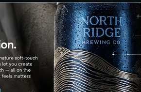

Make the finish part of the art.
Color gets attention. Surface contrast keeps it. Explore the interplay of dedicated matte, brilliant gloss and elevated embellishment.

Contrast you can see.
Different areas of a single design can feature selectively applied matte and gloss finishes, creating distinctive visual contrast.
Use matte to create a quieter foundation and gloss to emphasize lettering, illustrations and key details.
Every detail has a purpose.
Dedicated matte
A controlled, low-sheen visual treatment. SatinMatte™ is a proposed name, pending trademark and product validation.
Spot gloss
Selective sheen brings attention to the elements that deserve it.
Dimensional effects
Embellishment opportunities that add visual and tactile presence; availability depends on design and production validation.
Designed to work together.
Our printed matte varnish is not currently equivalent to the soft-touch matte film used on some shrink sleeves. We will describe the actual finish accurately rather than imply a texture we cannot yet produce.